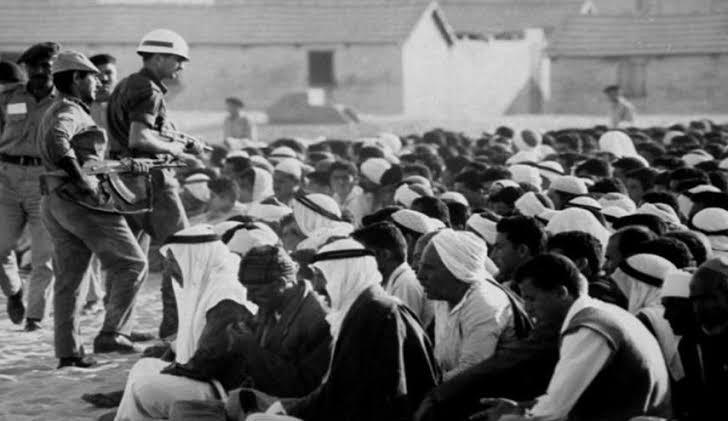
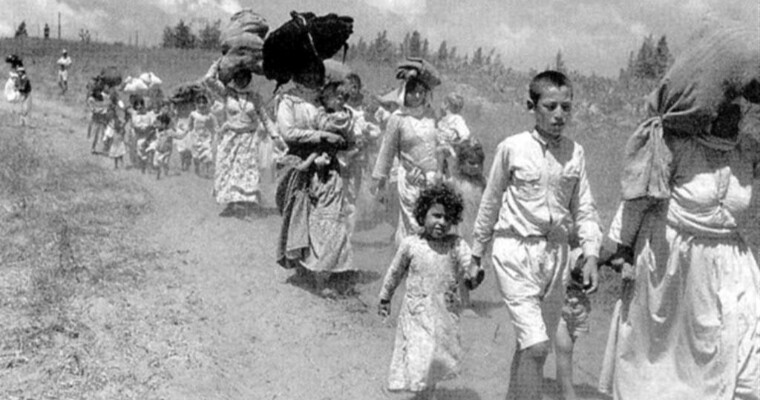
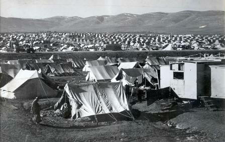
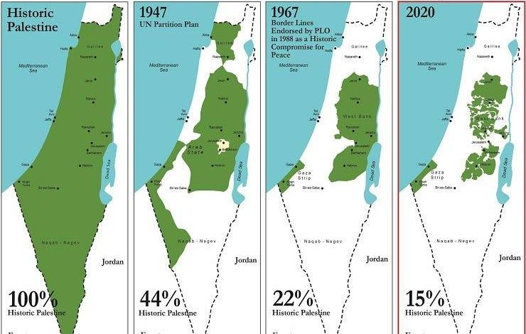

there is no peace without our land
What is the origin of the Jews ?
The Jews are the ones who turn to the Torah as evidence of their right to Palestine,
and the truth is that the Torah itself bears witness to the Palestinians right to the land.
The narratives of the Torah are like the saying of the original Jews and their existence is our master Abraham,
peace be upon him. Our Master Ibrahim, peace be upon him, came at the beginning of the second millennium before his appearance,
fleeing from Iraq, and he came with a very small group, meaning that he had no intention of building a society or a state. Rather,
he came on the run asking for protection, but he did not come, especially in Palestine,
which is what actually happened when his descendants (the sons of Jacob, peace be upon him) migrated from Palestine to Egypt and settled there,
but they did not exceed 70 people at best, according to the famous narrations and stories in the Quran and the Torah.
What is the origin of the Palestinians ?
The Palestinians belong to the Canaanites, and the Canaanites are a Semitic Arab people who immigrated from the Arabian Peninsula
and resided in the Levant. The Canaanites, the sons of Shem, peace be upon him,
arrived from the Arabian Peninsula to Palestine in the period between 3000 BC. And 2500 BC. That is,
more than 500 years before the coming of our Master Abraham, peace be upon her.
The story begins in 1948
They start come here for safety since 1830, when the Europe start killing them and they called them dirty people.
The Europe tried to destroy and killed them,
and after all of this Palestine was under UK control since 1922 to 1948
before they give them the power and guns to get the Palestine land, In order to expel them from their country.
What is known in the Balfour Declaration



These are some pictures that illustrate how the Zionist occupation occupies the Palestinian territories

This Is How the Zionist Occupation Slowly Stole Our Land.